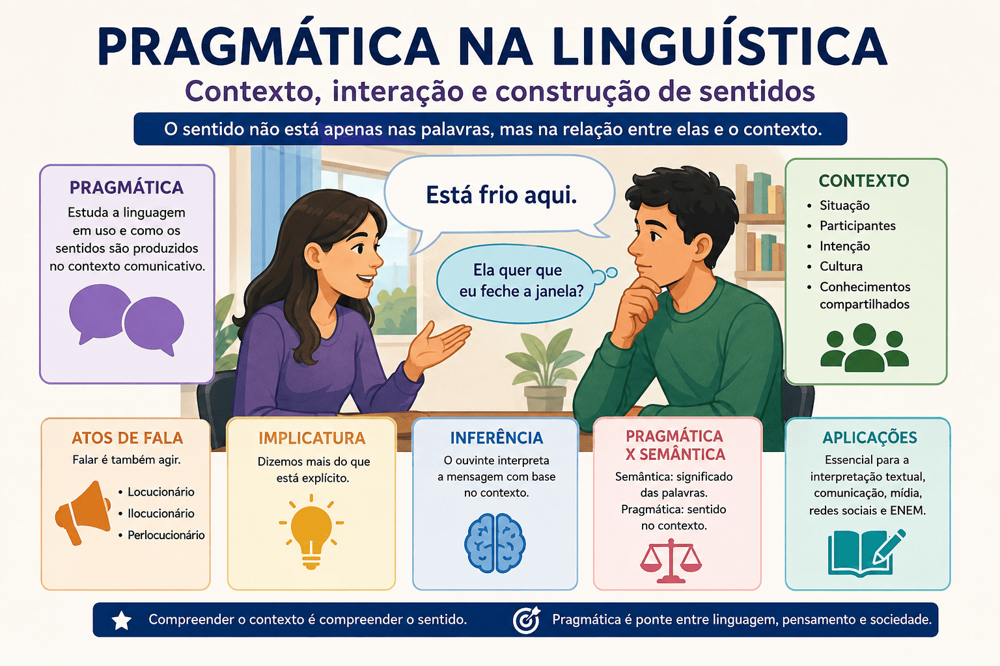

Pragmática na Linguística: contexto, interação e construção de sentidos
A linguagem humana ultrapassa a simples combinação de palavras e regras gramaticais. Em muitos contextos comunicativos, compreender uma mensagem exige interpretar intenções, inferências, situações sociais e conhecimentos compartilhados entre os interlocutores. Nesse cenário, a pragmática surge como um campo fundamental dos estudos linguísticos, voltado para a análise da linguagem em uso e dos efeitos produzidos nas interações sociais.

A pragmática consolidou-se como uma importante área da linguística ao investigar como os sentidos são construídos no contexto comunicativo. Diferentemente da semântica, que se ocupa do significado convencional das palavras e frases, a pragmática busca compreender como os falantes interpretam enunciados considerando fatores situacionais, culturais e discursivos.
O que é pragmática?
A pragmática pode ser definida como o estudo da relação entre linguagem, contexto e usuários da língua. Seu foco principal está na maneira como os sentidos são produzidos durante a interação comunicativa.
Segundo John Lyons, a pragmática investiga os aspectos da significação que dependem do contexto de uso da linguagem. Dessa forma, uma mesma frase pode assumir interpretações diferentes conforme a situação em que é utilizada.
Considere o enunciado:
“Está frio aqui.”
Sem o contexto, a frase apenas descreve uma sensação térmica. Entretanto, em uma situação comunicativa concreta, ela pode funcionar como:
- um pedido indireto para fechar a janela;
- uma reclamação;
- uma sugestão;
- ou apenas um comentário descritivo.
Esse fenômeno demonstra que o sentido não está apenas nas palavras, mas também nas intenções do falante e na interpretação do ouvinte.
A pragmática como estudo da linguagem em uso
De acordo com Stephen Levinson, a pragmática dedica-se à análise da linguagem em situações reais de comunicação. Para o autor, compreender um enunciado implica considerar conhecimentos compartilhados, contexto social e inferências.
“Pragmática é o estudo das relações entre a linguagem e o contexto que são gramaticalizadas ou codificadas na estrutura de uma língua. Em outras palavras, trata-se do estudo da capacidade dos usuários da língua de empregar sentenças adequadamente em diferentes situações comunicativas.”
(LEVINSON, 2007, p. 27).
A partir dessa perspectiva, percebe-se que os sentidos são construídos dinamicamente durante a interação. A interpretação depende não apenas do conteúdo linguístico, mas também das circunstâncias comunicativas.
Nesse sentido, a pragmática aproxima-se de áreas como a análise do discurso, a sociolinguística e os estudos da comunicação, pois considera fatores históricos, culturais e sociais presentes na linguagem.
Contexto e construção de sentidos
O contexto é um dos elementos centrais da pragmática. Ele pode ser entendido como o conjunto de informações que influencia a interpretação dos enunciados.
O contexto envolve:
- o local da interação;
- os participantes;
- os conhecimentos compartilhados;
- a intenção comunicativa;
- a situação histórica e cultural;
- os elementos não verbais.
Segundo Paul Grice, os interlocutores cooperam durante a comunicação para construir sentidos compreensíveis. Essa cooperação permite que mensagens implícitas sejam interpretadas mesmo quando não aparecem explicitamente no discurso.
Em sua teoria das implicaturas conversacionais, Grice explica que os falantes frequentemente comunicam mais do que dizem literalmente.
“Nossos intercâmbios comunicativos não consistem normalmente em uma sucessão de observações desconexas, e não seriam racionais se assim fossem. Ao contrário, eles são caracteristicamente esforços cooperativos; cada participante reconhece neles, até certo ponto, um propósito comum ou um conjunto de propósitos.”
(GRICE, 1982, p. 86).
Essa concepção mostra que a comunicação depende de inferências realizadas pelos interlocutores. Muitas vezes, o verdadeiro sentido de um enunciado não está expresso diretamente, mas é recuperado a partir do contexto.
Diferença entre pragmática e semântica
Embora estejam relacionadas, pragmática e semântica possuem objetos de estudo distintos.
A semântica investiga o significado convencional das palavras e estruturas linguísticas. Já a pragmática analisa os sentidos produzidos no uso concreto da língua.
Por exemplo:
“Você pode abrir a porta?”
Semanticamente, trata-se de uma pergunta sobre capacidade física. Entretanto, pragmaticamente, o enunciado funciona como um pedido.
Essa diferença demonstra que a interpretação linguística depende não apenas da estrutura gramatical, mas também da intenção comunicativa.
Segundo José Luiz Fiorin, a pragmática amplia os estudos da significação ao incorporar elementos externos ao sistema linguístico. O autor destaca que a língua não pode ser analisada isoladamente das práticas sociais.
Os atos de fala na pragmática
Outro importante conceito pragmático é a teoria dos atos de fala, desenvolvida por John Austin e posteriormente ampliada por John Searle.
Austin argumenta que falar não significa apenas transmitir informações, mas também realizar ações.
“Ao dizer certas palavras, não estamos apenas descrevendo uma ação ou relatando algo: estamos efetivamente realizando atos. Prometer, ordenar, agradecer e pedir desculpas são exemplos de ações executadas por meio da linguagem.”
(AUSTIN, 1990, p. 29).
Assim, os enunciados possuem força comunicativa e produzem efeitos concretos nas relações sociais.
A teoria dos atos de fala divide os atos linguísticos em:
- atos locucionários;
- atos ilocucionários;
- atos perlocucionários.
Esses elementos demonstram que a linguagem funciona como instrumento de ação social.
Pragmática e comunicação digital
Na contemporaneidade, a pragmática tornou-se ainda mais relevante diante das novas formas de comunicação digital. Redes sociais, aplicativos de mensagens e memes dependem fortemente de inferências contextuais.
Em muitos casos, emojis, ironias e referências culturais alteram completamente o sentido de uma mensagem.
A frase:
“Nossa, que ótimo…”
pode indicar satisfação ou ironia, dependendo do contexto, da pontuação e até mesmo do uso de emojis.
A interpretação digital exige conhecimentos compartilhados entre os usuários, reforçando a importância do contexto na comunicação contemporânea.
A pragmática na interpretação textual
A pragmática possui grande relevância para a interpretação textual, especialmente em exames como o ENEM e vestibulares. Muitas questões exigem que o estudante identifique:
- implícitos;
- ironias;
- pressupostos;
- intenções discursivas;
- efeitos de sentido.
Dessa maneira, compreender os princípios pragmáticos contribui para uma leitura mais crítica e aprofundada dos textos.
Além disso, o estudo da pragmática auxilia na compreensão de discursos políticos, publicitários e midiáticos, permitindo analisar como os sentidos são estrategicamente construídos.
Considerações finais
A pragmática ocupa posição fundamental nos estudos linguísticos ao investigar a linguagem em funcionamento social. Seu foco na relação entre contexto, intenção e interpretação revela que os sentidos não estão fixos nas palavras, mas são construídos dinamicamente nas interações humanas.
Ao analisar fenômenos como implicaturas, atos de fala, inferências e contextos comunicativos, a pragmática amplia a compreensão sobre o funcionamento da linguagem e sobre os mecanismos que orientam a produção de sentidos.
Em uma sociedade marcada pela comunicação digital e pela circulação intensa de discursos, o estudo da pragmática torna-se indispensável para desenvolver leitura crítica, interpretação textual e compreensão das relações sociais mediadas pela linguagem.
Referências
AUSTIN, John. Quando dizer é fazer. Porto Alegre: Artes Médicas, 1990.
FIORIN, José Luiz. Introdução à Linguística. São Paulo: Contexto, 2010.
GRICE, Paul. Lógica e conversação. São Paulo: Cultrix, 1982.
LEVINSON, Stephen. Pragmática. São Paulo: Martins Fontes, 2007.
LYONS, John. Linguagem e Linguística. Rio de Janeiro: LTC, 1987.
Explore Outros Conteúdos
Continue seus estudos acessando outras seções do site Mestre Kira: